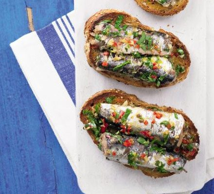

Sardines on Toast

Enjoy the taste of the Med!
Packed with healthy omega-3 fats and easily made with a cheap storecupboard staple, our sardines on toast recipe is a sure hit.
Serve with a crisp white wine, such as a Chablis or Pinot Grigio.
Ingredients
- 2 x 120g cans of sardines in sunflower oil (drained)
- 1 garlic glove, chopped
- 1 red chilli, deseedd and chopped
- 1 lemon, zest and juice
- 4 slices brown bread
- Half small bunch parsley, chopped
Steps
- Heat the olive oil in a frying pan, then sizzle the garlic clove and red chilli. Add the lemon zest.
- Add the sardines and heat through for a few mins until warm.
- Toast the brown bread. Stir the parsley into the sardines, add a squeeze of lemon juice, then divide between the toast and serve.
Back to the Recipes